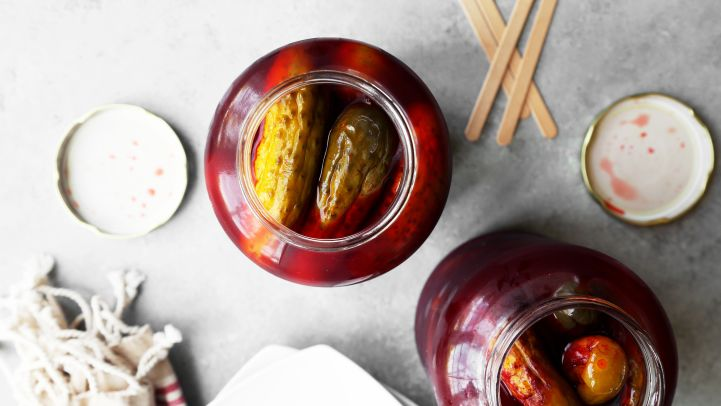
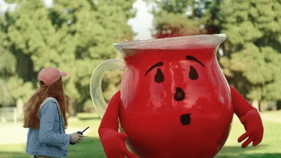

Kool-Aid Pickles Recipe

"I got this recipe out of today's newspaper. It looked interesting! In the article, it said they have a sweet/sour taste. I'm going to prepare them tonight!!!" -KitKat54
Ready in : 10 minutes
Serves : 8-10
Ingredients :
- 1 (46 ounce) jar whole dill pickles
- 1 cup sugar
- 2 cups water
- 2 (1 ounce) packets kool-aid unsweetened cherry drink mix
Directions :
- Drain and discard the juice from the pickle jar. Remove the pickles from the jar and cut each one in half lengthwise. Return the pickles to the jar and set aside.
- In a large measuring cup, combine the sugar, water and Kool-Aid. Mix until the sugar has completely dissolved. Pour enough of the liquid into the pickle jar to cover the pickles. Discard any excess.
- Cover the jar and refrigerate at least 24 hours.
Editor's Note : OHH! YEAHHH!!
